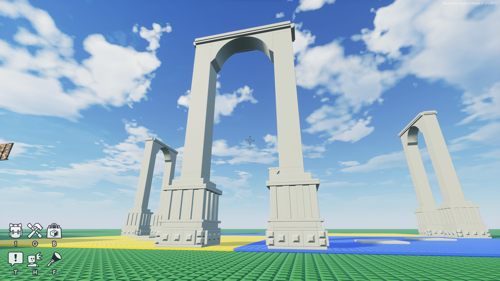

DevBlog #1 Developing
Brickadias Deathrun - Part 2
Creating the lobby, shops, rules, and many other necessary features!


Welcome back to our Dev Blog! Things are starting to come together as we develop our Deathrun server. It's been quite the journey, and I'm excited to share the latest progress with you all.
The Lobby: Creating a Memorable First Impression
The lobby started off as a concern for first impressions. What if a player joins the server between map switches and sees an ugly empty space, or even worse, the remnants of the previous map clearing? I needed something that would give them a calm, welcoming space that sets the vibe and makes a good first impression.
I initially thought of creating a series of connected islands with cool pillars. However, I soon realized this wasn't ideal because of Brickadia's infinity render distance; you could see the Deathrun maps in the distance, which wasn't visually appealing.
These where the first pillars I Built
If you look closely at the image above you will see something far in the background, it's a Deathrun map (Amazing spoiler I know). I am currently very far away and you can still see it. for point of reference, that square is 100x100 studs, and I am currently standing on it (can you see me?)
I eventually decided on a circular valley. It looks visually stunning from ground level, with walls on all sides so you can't see outside, and plenty of space to accommodate many features!
Starting with a simple spawn platform and walkways, the lobby quickly evolved into something more. Here's what we've added:
Deathrun Portal
It makes sense that you join the server by spawning in the lobby, but how do you join the Deathrun? I created a portal to get you started. This way, you can join the server, explore the lobby, and learn what you need to do before jumping into the game. I even added a little information board next to the spawn platform that displays the rules, how to play, our Discord server details, and ways to support the server.
Deathrun Diner
A cozy spot for you to hang out with your buddies while waiting for the next round!
Staff HQ building
Eventually, we needed a place to house all the necessary buttons and tools to operate Deathrun. I also wanted a spot where I could oversee the server while handling important tasks, so I decided to build a dedicated area for it.
Leaderboards
Now, you can track your progress with leaderboards for the highest level, points earned, and rounds won.
Shops
I was originally going to create a separate build and have players use "/shop" to teleport there. However, the lobby was big enough that I decided to consolidate them all together. The lobby was quickly taking on an almost medieval theme, so I ended up building a house that fit nicely:
RedBrick Shop
Here, you'll find abilities, gadgets, and special rounds like Double Death (bring a partner to assist you), Safe-Point (teleport back to a saved location), Death-Rush (turn the round into a race), and Night-Time (darken the map for an added challenge).
Weapon Shop
Since only melee weapons would make sense, I built a forge to accommodate this.
Weapon Zone
Honestly, I didn't know what to do with this area, so I laid down a platform. It was suggested that it would be nice if players could try out their loadouts without waiting for a Deathrun round to end, so I turned the platform into a small designated area for that exact purpose.
Ambient Details
We've added plants, foliage, lights, lamps, pathways, trees, and more to create an inviting atmosphere.
Even more! There are several other features to discover in the lobby, but you'll have to join the server yourself to discover them!
DEATHS HALLWAY
Something different that we're doing with this version of Deathrun is having Death pick the map. I built a hallway that allows Death to select a map before the next round starts. The runners and everyone else won't even know when it happens. The process behind this is very intricate and based on deceased players. It's so complex that I'm pretty sure if I explained how it worked, the system might actually break.
Looking Ahead
That's all for this edition of our Dev Blog! We're making great strides and can't wait to share more updates with you soon. Thank you for joining us on this journey, and stay tuned for further insights into our Deathrun server's development!
With the absence of behaviors, some features are still in the theoretical phase due to development limitations. The XP system, levels, LeaderBoards, and shop mechanics are subject to change or refinement as I progress. This is why we are currently focusing on the building side of Deathrun!
We should have more on the technical side of things soon!